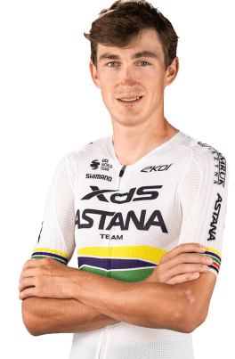

Ciclista - Yevgeniy Fedorov
Datos personales
- Yevgeniy Fedorov
- 16/02/2000
- Kazakhstan
- XDS ASTANA TEAM/kaz
- 182

Datos equipos
- XDS Astana Team (2025- 2026)
- Astana Qazaqstan Team (2022 - 2024)
- Astana - Premier Tech (2021)
- Vino - Astana Motors (2019 - 2020)
Temporada 2025
| Nombre del Datos | Resultado |
|---|---|
| Carreras disputadas | 65 |
| Victorias de etapa | 3 |
| Victorias de clasificación general | 1 |
| Podios conseguidos | 8 |
| Maillots de montaña | 2 |
| Maillots de regularidad | 1 |
Multimedia
Equipo XDS ASTANA TEAM/kaz en la Vuelta Ciclista a España 2026.